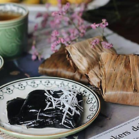
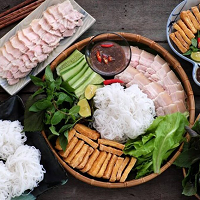
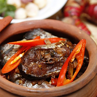

Cuisine From The North
In northern Vietnam, a colder climate limits the production and availability of spices. As a result, the foods there are often less spicy than those in other regions.Black pepper is used in place of chilies as the most popular ingredient to produce spicy flavors. In general, northern Vietnamese cuisine is not bold in any particular taste—sweet, salty, spicy, bitter, or sour. Most northern Vietnamese foods feature light and balanced flavors that result from subtle combinations of many different flavoring ingredients.
- 
BanhGai - 
BunDauMamTom - 
CaKho
ChaGio